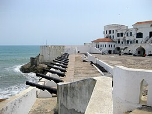
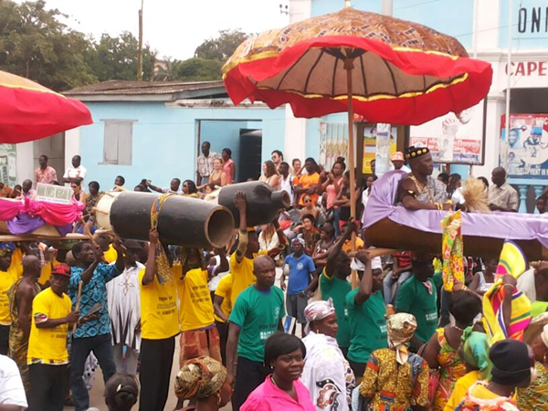

Top three activities to do in Central Region

Take a stroll on the longest African Canopy Walkway
Established in a reserve with endangered species. More information

Visit the Cape Coast castle
One of the spots that evokes painful memories of the Trans-Atlantic slave trade. More information

Learn culture and history from Fetu Afahye
The annual festival Fetu Afahye is organized in September where royalty is displayed. More information